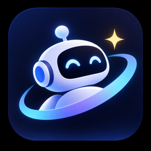

连接本机 Agent 服务
桌面应用会启动并管理本机 Agent 服务，再打开现有工作台。服务启动失败时可查看日志并重试。
桌面服务只监听本机地址。模型与服务选项统一从工作台侧栏“设置”进入；API Key 保存后重启桌面应用生效。连接或重试不会重发 Agent 命令。

Automation Agent桌面应用会启动并管理本机 Agent 服务，再打开现有工作台。服务启动失败时可查看日志并重试。
桌面服务只监听本机地址。模型与服务选项统一从工作台侧栏“设置”进入；API Key 保存后重启桌面应用生效。连接或重试不会重发 Agent 命令。